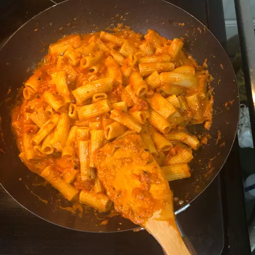

Recco Pasta

Description
This dish is a dish inspired by my soon to be wife's favourite pasta. It is a tomato curry infused pasta with chicken or prawn pieces.
Ingredients
- 300g chopped Chicken or Prawn meat
- 1 Large Onion
- 2 Large Tomatoes
- 300g Pasta
- 2 TBS Olive Oil
- 1 TBS Medium Curry Powder
- 1 Large Red Pepper
Steps
- Braise onion and pepper in olive oil
- Add Chicken or Prawn
- Add Curry Powder
- Add Tomato
- Add 500ml Boiled Water and allow to cook for 30 min
- Cook Pasta
- Serve